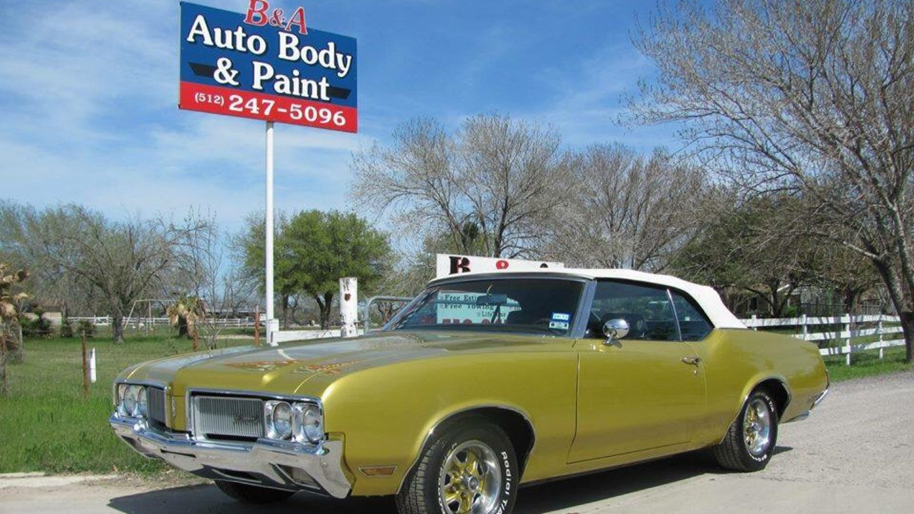

Repair orderEstimate request
Auto body and paint · Del Valle, TX
Back from the grave, left like new.
Collision repair, paint and full restorations on Burch Drive. Kept updated, finished on time.
- Shop
- Before & After Auto Body and Paint LLC
- Town
- Del Valle, TX
- Call
- (512) 247-5096
- Rated
- 4.9 on Google

Section A
The repair checklist
Collision repair, paint work and full restorations, with insurance paperwork handled for you.
Collision repair
Rear-end and front-end hits, fixed and finished to look like new.
- Front-end repair
- Rear-end repair
- Insurance paperwork

Paint work
Scratch repair, finish matching and headlight restoration.
- Scratch repair
- Finish matching
- Headlight restoration

Full restoration
Rusted or worn vehicles brought back better than before. Ask about yours.
- Rust and rot
- Body and paint
- Whole-vehicle work

Section B
How a repair goes
- STUB 1
Tell us what happened
The front office listens and explains the repair process before work starts.
- STUB 2
We fix it and keep you posted
Updates throughout, and insurance paperwork handled.
- STUB 3
Pick it up
The car comes back looking like new, often quicker than quoted.
Section C
Jobs we are proud of


4.9 · 35 Google reviews
Straight from customers
Pio is an artist and was excellent for me. Aurora made it really easy to get my truck fixed. They were very reasonable and finished quicker than they said. Highly recommend
Brought my fathers truck back from the grave to better than what it was in the 80s! This thing was an eye sore and rotting away. I can do a lot of things to cars but body and paint is not one and I had previously had some work done on other vehicles and knew the quality of their work so It was a no brainer when I decided to restore the truck. Highly recommended!
quick repair, great customer service, kept updating on the car, left it like new definitely recommend coming again!
Shop notes
A body shop on Burch Drive
Bring the car in as it is, pick it up looking like new. We serve Austin and the surrounding areas.
Friendly office staff who listen and explain the repair before work starts.
From minor dents and scratches to old trucks rotting away, the work gets finished right.
- Kept in the loopUpdates through the whole repair.
- Insurance handledWe work with your insurer and handle the paperwork.
- Matches the originalScratches and damage repaired to look like new.